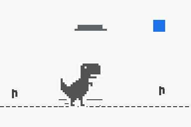
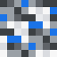

用 pilog 搭建像素风博客
一套轻量的静态博客框架：读取 blogs/ 目录下的 Markdown，生成卡片 / 清单 / 图谱三种视图，主题复刻 Chrome 断网页的像素美学。

一套轻量的静态博客框架：读取 blogs/ 目录下的 Markdown，生成卡片 / 清单 / 图谱三种视图，主题复刻 Chrome 断网页的像素美学。

这份速查表展示了本博客支持的 Markdown 能力，同时也用于演示引用关系： 更多能力（目录、表格、代码高亮等）由 pilog 框架说明 介绍。

把 blogs/ 目录直接作为 Obsidian 仓库打开，就能获得双向链接、图谱视图等本地能力。 新建文件默认位置：当前文件夹； 附件默认保存位置：assets； Wiki 链接格式：最短路径。 这样拖进来的图片会自动落到 blogs/assets/，写作时用 ![[图片名.png]] 引用，构建时 pilog 会原样解析。 博客框架本身的细节，可以看 [[pixel-blog]]。 在 front matter 里可以手动指定 preview，卡片视图会优先展示它（支持 Markdown…
主页右下角藏着一只 Chrome 断网页小恐龙。点开它，就可以在写博客的间隙跑两步： 空格 / ↑：跳跃 ↓：下蹲（空中可急降） Enter：重新开始 游戏整体复刻了 Chromium 官方的像素配色与手感，也定义了本站的视觉语言：灰白底、锐利直角、没有多余的圆角。 想直接玩，点这里：开始游戏。
图谱节点已经加大，可以容纳更长的标题；当标题仍然超出节点宽度时，末尾会用 ... 截断，悬停节点可以看到完整标题。 这篇示例本身没有更多内容，它的任务已经完成了。
这是一个由 pilog 驱动的极简像素风博客。 这里记录技术笔记、生活随笔，以及一切值得留下来的片段。博客支持三种视图：卡片、清单与图谱，内容由 Markdown 编写，配合 Obsidian 使用体验最佳。 在 blogs/ 目录下新建 .md 文件，使用 Obsidian 或其他编辑器撰写； 运行 python build.py 生成静态站点； 用 GitHub Desktop 提交，GitHub Actions 会自动部署到 GitHub Pages。 页脚有社交账号入口。也可以直接通过 GitHub 发起…